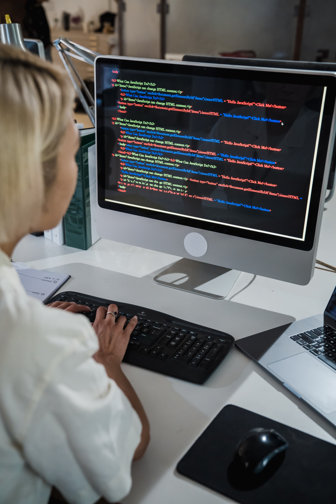

Como é a profissão do graduado em Tecnologia da Informação
As Tendências da Área de TI
Voce ja se fez essa perguntou o que faz um profissional do TI? Há muitas responsabilidades, cargos e nichos diferentes na área de Tecnologia da Informação, Sistemas de Informação ou, conhecido popularmente por TI.
O profissional de alguma das áreas do TI é responsável por gerenciar todos os dados de fontes internas e externas de uma empresa e compilando em softwares, sites ou bancos de dados.
Capazes de gerir sistemas computacionais, e apoiar a logística de trabalho de toda empresa prestando apoio, elaborando e gerindo os seus sistemas.
Leia Mais
Esses conjuntos de operações são realizados através de uma combinação de equipamentos,como:
Hardware: PCs, notebooks, smartphones, tablets e também equipamentos de redes e entre outros.
Software: Sistemas operacionais, aplicativos, protocolos de comunicação, antivírus, soluções de ERP e entre outros.
Assim as informações relevantes serão agrupadas e acessadas de forma prática para que outros profissionais da corporação possam ter acesso.
Como você pode ver, é uma área extensa. Então, dentro de tudo o que faz um profissional de áreas do TI é possível encontrar oportunidades em diversos segmentos do mercado, desde o operacional à gestão, mas claro que na tecnologia está muito mais presente.
Com as mudanças na rotina de trabalho atual, desencadeou uma adoção em massa da tecnologia nos últimos anos, para facilitar de forma prática o cotidiano de qualquer empresa.
A tecnologia provoca diversas transformações no mercado, como vimos neste texto. Por isso, o profissional da área de TI precisa estar atento às projeções e tendências que podem determinar o futuro do setor. A boa notícia é que, quando o assunto é tecnologia, as perspectivas são sempre animadoras, uma vez que a inovação contribui muito para a ascensão da tecnologia no mercado de trabalho.
Leia Mais
Sendo assim, alguns segmentos para ficar de olho na área de TI são:
Jogos Digitais
Inteligência das Coisas.
Inteligência Artificial.
Assistentes virtuais e Interação por Voz.
Privacidade dos Dados.